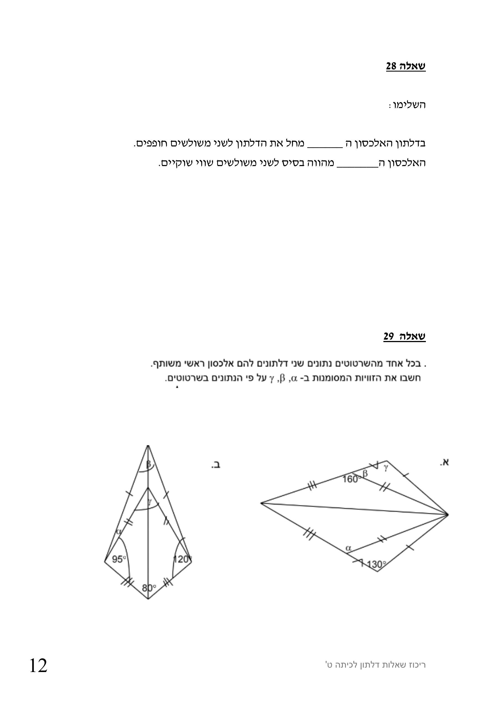

עמוד 12 — batch 02
שאלה 28 השלימו: בדלתון האלכסון ה ______ מחל את הדלתון לשני △ים חופפים
האלכסון ה_______ מהווה בסיס לשני △ים שווי שוקיים
שאלה 29 ריכוז שאלות דלתון לכיתה ט' 12
עמוד מקור לבדיקה חזותית
